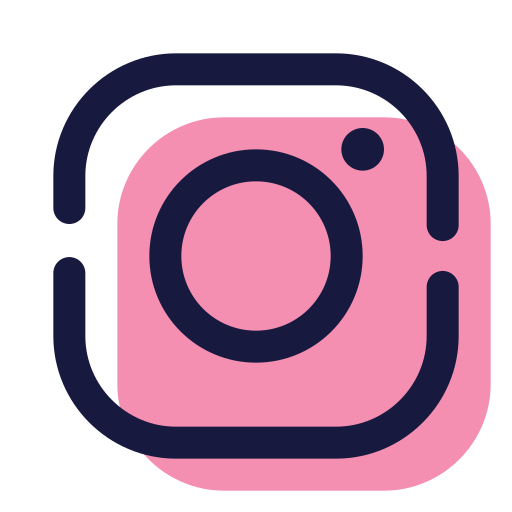

Hello !! I'm Aditya, an Aspiring ML Engineer from India with a keen interest in understanding how technology works and how it can automate processes to solve problems, making our lives easier. My journey into technology began with a fascination for how computers function and their potential to create impactful solutions.
With a strong foundation in Python, Java, and Swift, I have explored diverse areas of technology, including Machine Learning, Computer Vision, Generative AI, iOS Development, and Cloud Computing. I enjoy working with tools like SwiftUI, Xcode, and AWS, leveraging them to deploy scalable systems, host live applications, and push the boundaries of innovation.
Currently pursuing a B.Tech in Computer Science Engineering, I am eager to take my skills further and contribute to the tech industry with innovative ideas. I aspire to secure a Summer Internship in 2025 to enhance my expertise and gain hands-on experience.
When I'm not learning, you'll often find me exploring new advancements in technology, especially in automation and AI, brainstorming creative ideas, or even updating myself with some history and geopolitics.
